Tops can have no sleeves, short sleeves or long sleeves.
New tops: Tank top, Sailor top, Sweater vest, Sundress, Jumpsuit, Hawaiian shirt.
The top, bottoms and favourite colour (shoes) can be any colour, picked with sliders or a hex code.
Looks saved before this change draw as they did.
New tops from every side
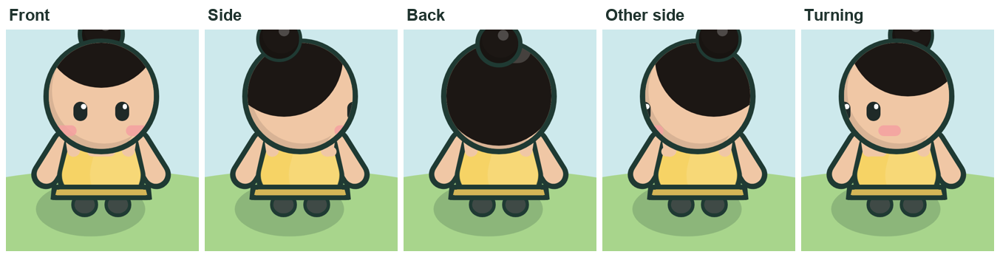
Tank top (no sleeves choice)
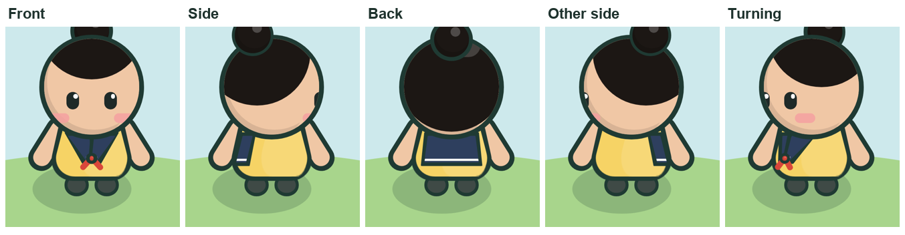
Sailor top: square collar at the back, V and neckerchief at the frontSailor top with long sleeves and cuffs
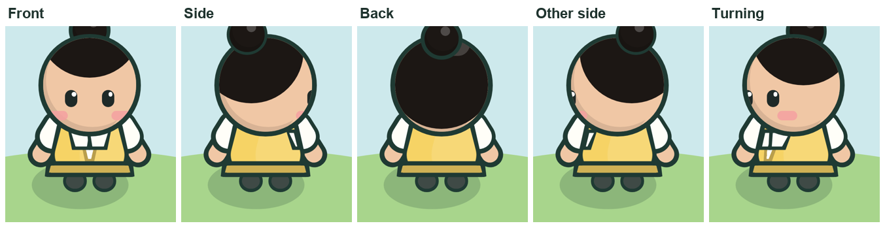
Sweater vest with short sleeves (the shirt under it)
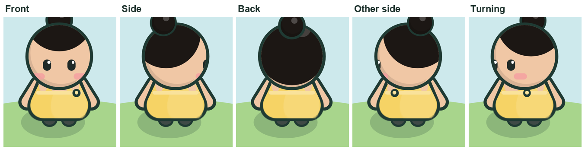
Sundress (no sleeves choice, its own bottoms)
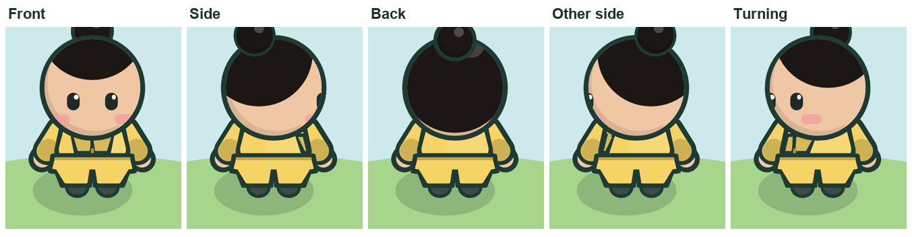
Jumpsuit with long sleeves, trousers in the same colour
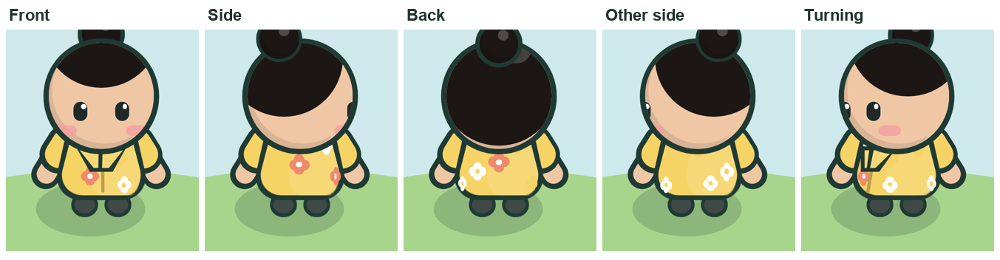
Hawaiian shirt with short sleeves
Sleeves
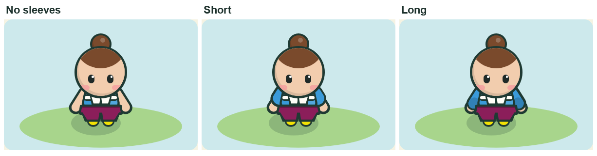
Collared shirt: none, short, long
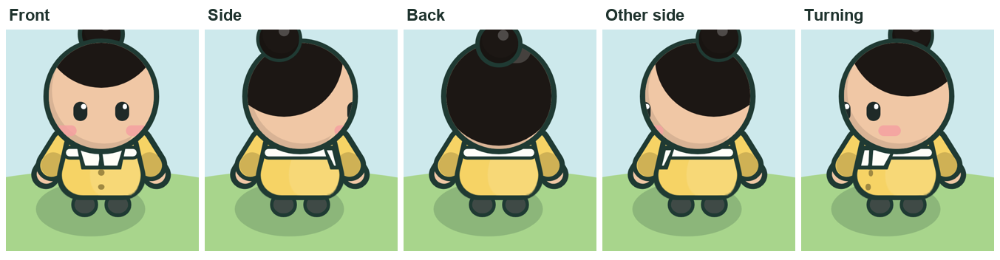
Long sleeves turn with the body
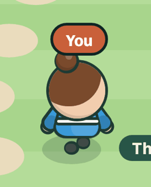
Long sleeves on a walking character, with #588's arm swing and #589 merged in too
Any colour
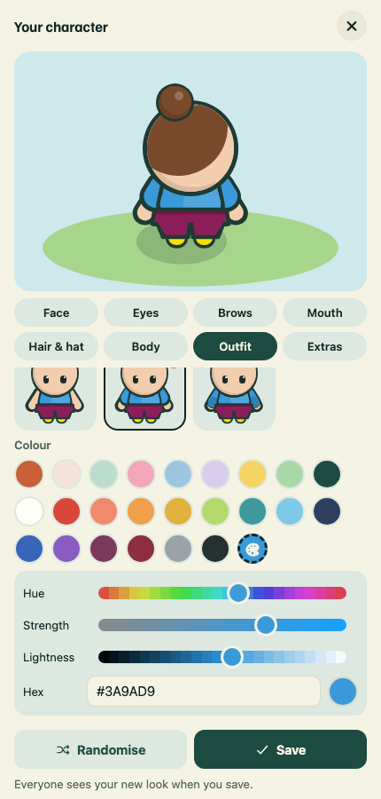
The last swatch opens hue, strength and lightness sliders and a hex box
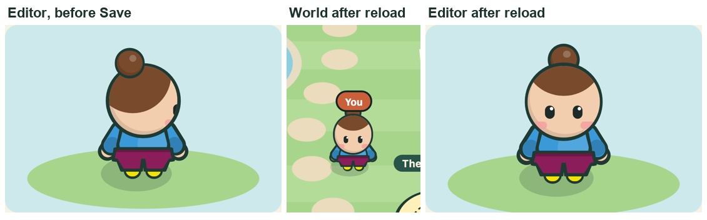
Custom top, bottoms and shoe colours, kept after Save and a reload
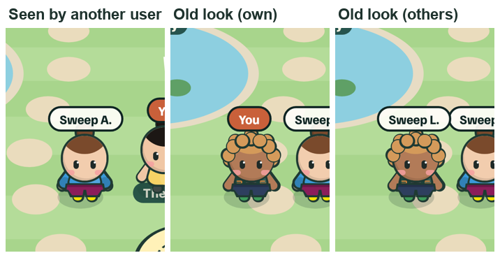
Another signed-in user sees the new look; a look saved in the old shape still draws, for its owner and for others
Fix in 26f31da4: upside-down collar
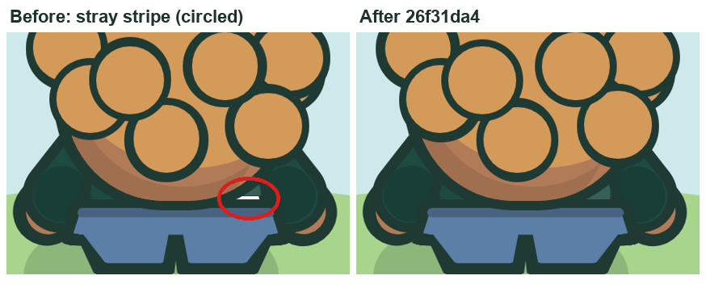
A short character in trousers: the sailor collar was drawn upside down and a stripe poked out under the head. It is skipped now when the head covers it.
Verification
Verified on web (local isolated backend, test accounts only):
The PR's outfits web check passes, before and after 26f31da4.
Every new top from five sides; sleeves choice hidden on Hoodie, Tie-dye tank, Tank top and Sundress.
Custom colours persist after Save and a reload; a second user sees them.
The server rejects bad looks: out-of-range or fractional custom colours, a custom colour on a non-clothing part, sleeves 3, outfit 18.
Merged with #589 and #588 locally: typecheck, lint, knip and all unit tests pass.
Not verified: iOS (keyboard insets), how a custom-colour look appears in an older app build (code says the default colour).